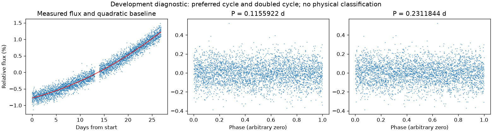
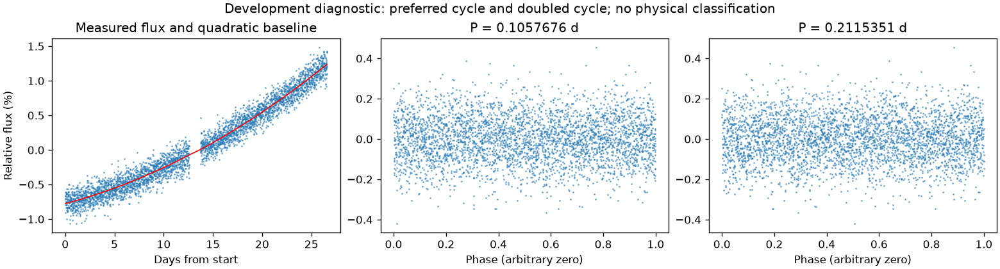

并非所有时段都支持重复变化
第三版周期：None 天；状态：not_established。

左图红线是缓慢基线；右面两图去除该基线。若未通过周期要求，两图只展示得分最高的竞争解释。
| 竞争周期（天） | 预测方法与改善 | 各组改善 | 通过初筛 |
|---|---|---|---|
| 0.1155922 | 交替循环：-1.1% | -2.1% / -0.2% | 否 |
| 6.8791480 | 交替循环：-1.3% | -1.3% / -1.3% | 否 |
| 0.3666882 | 交替循环：-1.5% | -2.2% / -0.7% | 否 |
| 4.8393513 | 交替循环：-1.6% | -2.1% / -1.1% | 否 |
| 0.1786208 | 交替循环：-1.6% | -2.3% / -1.0% | 否 |
| 0.1112481 | 交替循环：-1.7% | -1.5% / -1.8% | 否 |
| 0.0577808 | 交替循环：-1.9% | -1.7% / -2.1% | 否 |
| 0.0555970 | 交替循环：-1.9% | -0.8% / -3.0% | 否 |
“预测改善”衡量用一组周期的形状预测另一组，比只有缓慢基线好多少；负数表示更差。搜索和预测共用了资料，因此这不是可信概率，也不是独立验证。
第三版周期：None 天；状态：not_established。

左图红线是缓慢基线；右面两图去除该基线。若未通过周期要求，两图只展示得分最高的竞争解释。
| 竞争周期（天） | 预测方法与改善 | 各组改善 | 通过初筛 |
|---|---|---|---|
| 0.1057676 | 交替循环：-1.2% | -1.0% / -1.3% | 否 |
| 0.2896919 | 交替循环：-1.3% | -1.5% / -1.1% | 否 |
| 1.3759738 | 交替循环：-1.4% | -1.6% / -1.1% | 否 |
| 7.4256815 | 交替循环：-1.4% | -1.4% / -1.4% | 否 |
| 2.7637657 | 交替循环：-1.8% | -1.8% / -1.8% | 否 |
| 0.0901757 | 交替循环：-2.4% | -2.8% / -2.0% | 否 |
| 5.7793762 | 交替循环：-2.4% | -2.1% / -2.9% | 否 |
| 0.1810645 | 交替循环：-2.7% | -2.5% / -2.9% | 否 |
“预测改善”衡量用一组周期的形状预测另一组，比只有缓慢基线好多少；负数表示更差。搜索和预测共用了资料，因此这不是可信概率，也不是独立验证。